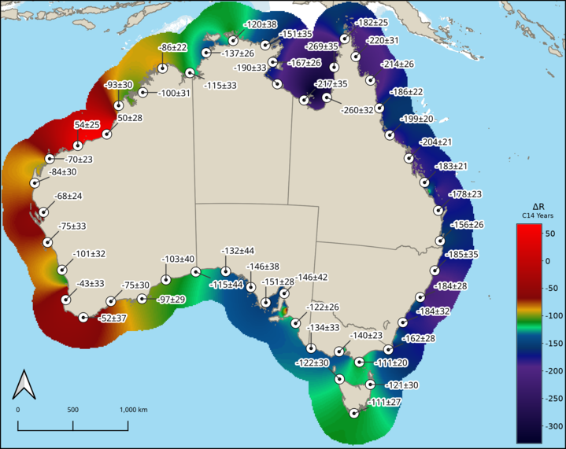

The Australian ΔR Calculator: interactive spatial modelling
Live at https://delta-r-calc.jcu.io — try it: click anywhere on the Australian coast and the tool returns the local ΔR value, with its uncertainty.

The problem behind the tool
Radiocarbon dating is how we put ages on shells, bones, charcoal and sediments — the backbone of archaeology, Quaternary science and palaeoenvironmental reconstruction. But a radiocarbon date measured on marine material doesn’t map cleanly onto calendar years. The ocean’s carbon is not the atmosphere’s carbon: surface seawater carries a radiocarbon signature offset from the air, and that offset — the marine reservoir effect — varies from place to place.
A shell collected off one stretch of coast can date centuries “older” than an identical shell collected elsewhere. So every marine radiocarbon measurement needs a local correction, called ΔR, before it can be calibrated to a real calendar age. Getting ΔR wrong doesn’t produce an obviously bad date — it produces a plausible-looking date that is silently wrong, which is worse.
Here is the practical difficulty: ΔR can’t be measured everywhere. We only have ΔR values where someone has dated suitable paired samples — shells of known collection age, or marine and terrestrial material buried together. Around Australia, those observations are sparse and unevenly distributed: clusters where research has been busy, long empty stretches where nobody has worked.
So the spatial problem is a classic one: a handful of dated observations scattered irregularly around 34,000 km of coastline, and a question that must be answered at any point on that coast. Between the observations, ΔR doesn’t jump discretely — it varies continuously, influenced by oceanography such as currents and coastal geometry. It needs estimating, with the influence of nearby measurements weighted sensibly and the uncertainty of the estimate made visible.
The approach
The answer is kriging — the standard geostatistical method for interpolating a continuous surface from irregular point observations. Each observation contributes to the estimate at a queried location according to the modelled spatial relationship between the measurements: how much two ΔR values can be expected to resemble each other as a function of their separation along the coast.
The modelling work that sits behind the Calculator did exactly this: it modelled the relationship between each observed ΔR value and its neighbours, and derived from that a rule for the entire Australian coast — not a set of point answers, but a continuous surface. Crucially, kriging doesn’t just produce a best estimate; it produces a variance. The Calculator can therefore tell a researcher not only the expected ΔR at their site, but how confident to be in that number given how far it lies from the nearest observations. A query in data-rich waters and a query in a long data gap get different, honest answers.
The product
The Australian ΔR Calculator (https://delta-r-calc.jcu.io) packages that modelled surface as a live, public web application. Click on a location and the tool returns the local ΔR and its uncertainty, on demand. It accompanies a paper I co-authored, Ulm et al. (2023) ΔR atlas — the research publication that assembled and analysed the observations — and gives that research a working, queryable delivery vehicle: the atlas is the evidence base, the Calculator is the interface to it.
My involvement was the modelling and the web construction: building the spatial model that turns sparse dated observations into the coastal ΔR surface, and building the web tool that serves it.
Why I point to this piece
I show this work because it shows the whole pattern of my practice in miniature:
- From sparse, messy observations to a defensible spatial estimate — the same shape as the problems I solve for clients in water, vegetation and environmental monitoring.
- Uncertainty carried honestly alongside the answer — an estimate without its confidence is not a decision-grade product; it’s a guess wearing a number.
- Research shipped as a working tool, not a PDF — a live, public, reproducible interface that anyone can interrogate: analysis that is traceable, defensible and reproducible.
Reference
Ulm, S., D. O’Grady, F. Petchey, Q. Hua, G. Jacobsen, L. Linnenlucke, B. David, D. Rosendahl, M.M.E. Bunbury, M.I. Bird and P.J. Reimer 2023 Australian marine radiocarbon reservoir effects: ΔR atlas and ΔR calculator for Australian mainland coasts and near-shore islands. Radiocarbon 65(5):1139-1159. https://doi.org/10.1017/RDC.2023.95